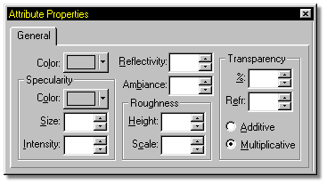
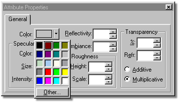
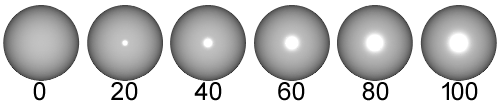
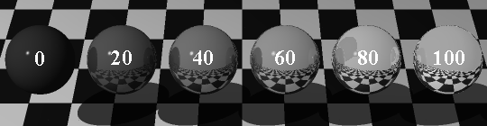
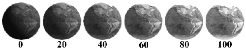
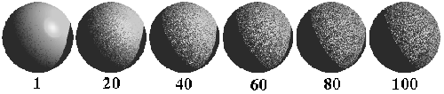
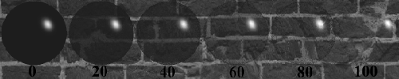
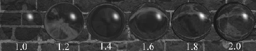

The fields on the Properties Panel are empty to designate no entry. If no value is entered in any field, the software will use the value from the Base Attribute of the model (which is set by clicking the model name in the Project Workspace, then making any desired changes to the values on the Properties Panel).
The following is a list of available options and descriptions of each.
COLOR
Upon clicking the Color option on the Properties Panel, a standard system color palette will appear, as shown in figure 1.

Figure 1
You can select a color by clicking on it, or click the “Other” button to open a full palette color picker. With the full palette open, numerical entries can be made directly into the Red, Green, and Blue fields. Custom color sets can also be designed.
SPECULARITY
Specularity is the highlight from a light source you get on an object. The default specular color is the color of the light source causing the highlight. The Specular Color option allows you to change the color of the highlight that appears on an object.
The specular size can range from 0 to 100. The default is 0, meaning no highlight at all. The higher the value, the larger the specular highlight.
Specular Intensity controls the intensity of the specular highlight. Intensity can range from 0 to 100.

REFLECTIVITY
Setting a Reflectivity value above 0 causes the object to have reflections of the surrounding objects in it. A value of 100% means that the segment is totally reflective and will add the color of the surrounding objects to it's own color.

AMBIANCE
Ambiance is a value that determines the brightness of an object when no light is hitting it. A value of 0 would indicate the material is black when in shadow, where a value of 100 would mean it had all the intensity of it's original color. A high ambiance makes objects appear as if they are self illuminating.

ROUGHNESS
Roughness is a turbulence function that perturbs the surface of your objects. The default Height value is 0, causing the object to be perfectly smooth. The larger the Height value, the rougher the surface gets. The scale value controls the size of the roughness.

TRANSPARENCY
To make an object be partially see through, use transparency. A value of 0 would mean the material is totally opaque. A value of 100 would mean the object is fully transparent.
The renderer has two methods of computing transparency, Additive and Multiplicative. To set the method you wish to use, click the appropriate Transparency Method radio button.
Using 50% Transparency as an example, here is the way the renderer computes the two transparency methods:
Additive: The renderer will take the color of the material and add 50% of the color that lies behind the object (setting a material to 100% transparency does not necessarily make it invisible, unless the object color is black and it has no specularity. As a matter of fact, the color will never get dimmer than the original object color, only brighter because colors are always added to it).
Multiplicitive: The renderer will take 50% of the objects color and 50% of the color that lies behind the object and add the resulting colors together.

REFRACTION
Refraction is the bending of light as it passes through a transparent object. The default value is 0, meaning no refraction. A material must have some transparency for the refraction value to be used.

Related Topics:
About Materials
Combiners
Turbulence